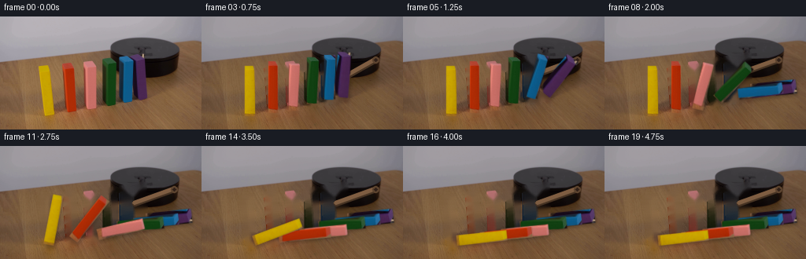
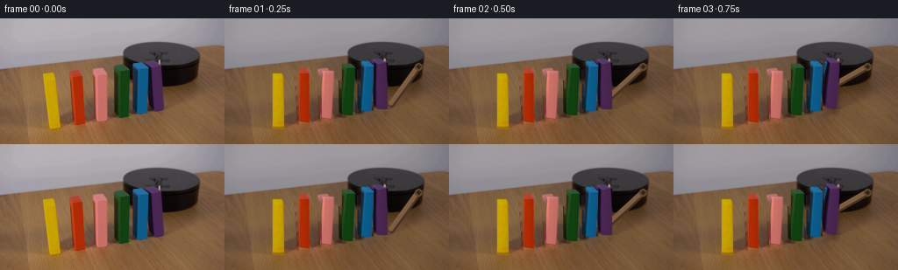
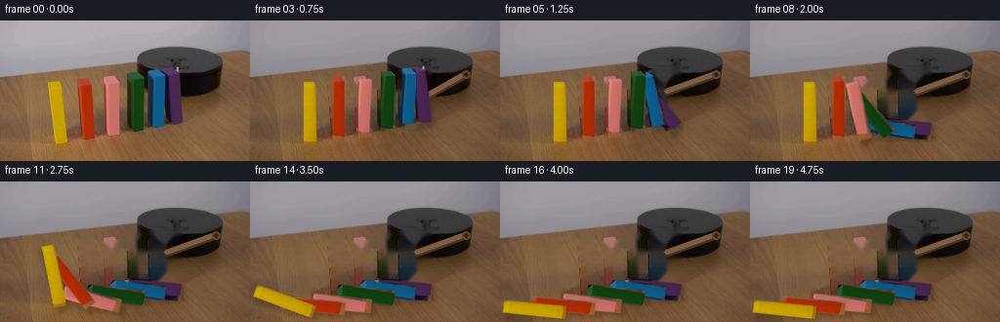
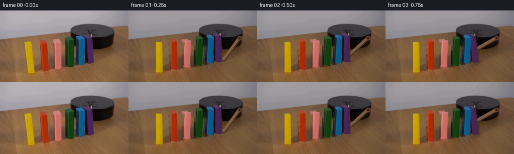

← 本轮 smoke 总览traex/DeepSeek-V4.1-Flash · 0034
text · 256×144 · 4.0 FPS · 20 帧 · 状态 complete · 输出 tokens 50190
原始任务Static locked-off single-shot with fixed frame throughout filmed with constant framerate in real-time. The scene shows a realistic scientific demonstration. The scene only contains the described setup and actions. A row of colorful wooden blocks has been lined up on a wooden table next to a black platform. The wooden stick attached to the black platform rotates clockwise and hits the first block.
当前保存结果
已保存候选与代码修改
这里按时间展示外部捕获的候选，每份均可单独播放。保存新版本不等于完成视觉检查；下方工具证据记录实际看过的图。
候选 01 · 2026-11-08T23:01:40.311160+00:00 · 点开播放与检查图
inspection.png

transition_check.png

代码变化
--- 上一保存版本
+++ 本次保存版本
@@ -0,0 +1,363 @@
+from pathlib import Path
+
+import cv2
+import numpy as np
+from PIL import Image
+
+import artifact_io
+
+
+CASE_DIR = Path(__file__).resolve().parent
+WIDTH, HEIGHT = 256, 144
+FRAME_COUNT = 20
+FPS = 4
+
+
+# The block faces are slightly trapezoidal because of the low camera angle.
+# Coordinates trace the visible colored face, not its cast shadow.
+BLOCK_SPECS = [
+ {
+ "name": "yellow",
+ "quad": [(49, 63), (64, 62), (68, 127), (57, 129)],
+ "pivot": (68.0, 127.0),
+ "fall_start": 2.42,
+ "fall_time": 1.22,
+ },
+ {
+ "name": "orange",
+ "quad": [(80, 59), (95, 58), (98, 123), (86, 127)],
+ "pivot": (98.0, 123.0),
+ "fall_start": 2.02,
+ "fall_time": 1.22,
+ },
+ {
+ "name": "red",
+ "quad": [(106, 62), (122, 60), (125, 120), (112, 124)],
+ "pivot": (125.0, 120.0),
+ "fall_start": 1.64,
+ "fall_time": 1.18,
+ },
+ {
+ "name": "green",
+ "quad": [(130, 54), (147, 52), (149, 111), (136, 115)],
+ "pivot": (149.0, 111.0),
+ "fall_start": 1.25,
+ "fall_time": 1.16,
+ },
+ {
+ "name": "cyan",
+ "quad": [(152, 51), (168, 49), (170, 106), (156, 110)],
+ "pivot": (170.0, 106.0),
+ "fall_start": 0.87,
+ "fall_time": 1.15,
+ },
+ {
+ "name": "violet",
+ "quad": [(165, 48), (185, 47), (186, 104), (171, 108)],
+ "pivot": (186.0, 104.0),
+ "fall_start": 0.56,
+ "fall_time": 1.13,
+ },
+]
+
+
+def _smoothstep(value):
+ value = float(np.clip(value, 0.0, 1.0))
+ return value * value * (3.0 - 2.0 * value)
+
+
+def _rotated(point, pivot, angle):
+ cosine, sine = np.cos(angle), np.sin(angle)
+ dx, dy = point[0] - pivot[0], point[1] - pivot[1]
+ return (
+ pivot[0] + cosine * dx - sine * dy,
+ pivot[1] + sine * dx + cosine * dy,
+ )
+
+
+def _make_background(source):
+ mask = np.zeros((HEIGHT, WIDTH), dtype=np.uint8)
+ for spec in BLOCK_SPECS:
+ polygon = np.rint(np.asarray(spec["quad"])).astype(np.int32)
+ cv2.fillPoly(mask, [polygon], 255)
+ mask = cv2.dilate(mask, np.ones((3, 3), np.uint8), iterations=1)
+
+ # Inpainting removes the upright blocks while preserving the table and the
+ # black apparatus behind them.
+ background = cv2.inpaint(source, mask, 4.0, cv2.INPAINT_TELEA)
+
+ # A restrained grain component keeps the newly exposed tabletop from
+ # reading as a flat inpainted patch.
+ rng = np.random.default_rng(7)
+ noise = rng.normal(0.0, 1.0, (HEIGHT, WIDTH)).astype(np.float32)
+ grain = cv2.GaussianBlur(noise, (0, 0), sigmaX=5.0, sigmaY=0.55)
+ grain = np.clip(grain, -2.1, 2.1)
+ grain_rgb = np.stack((grain * 1.9, grain * 1.35, grain * 0.8), axis=-1)
+ feather = cv2.GaussianBlur(mask.astype(np.float32) / 255.0, (0, 0), 1.2)
+ background = background.astype(np.float32) + grain_rgb * feather[..., None]
+ return np.clip(background, 0, 255).astype(np.uint8)
+
+
+def _extract_sprite(source, quad):
+ points = np.asarray(quad, dtype=np.float32)
+ width = int(round(max(np.linalg.norm(points[1] - points[0]),
+ np.linalg.norm(points[2] - points[3]))))
+ height = int(round(max(np.linalg.norm(points[3] - points[0]),
+ np.linalg.norm(points[2] - points[1]))))
+ destination = np.array(
+ [[0, 0], [width - 1, 0], [width - 1, height - 1], [0, height - 1]],
+ dtype=np.float32,
+ )
+ transform = cv2.getPerspectiveTransform(points, destination)
+ texture = cv2.warpPerspective(
+ source,
+ transform,
+ (width, height),
+ flags=cv2.INTER_CUBIC,
+ borderMode=cv2.BORDER_REFLECT_101,
+ )
+
+ alpha = np.zeros((height, width), dtype=np.uint8)
+ inset = 1
+ cv2.rectangle(
+ alpha,
+ (inset, inset),
+ (width - inset - 1, height - inset - 1),
+ 255,
+ thickness=-1,
+ )
+ alpha = cv2.GaussianBlur(alpha, (0, 0), 0.48)
+
+ # Reintroduce a little fine material variation after perspective sampling.
+ local_y, local_x = np.mgrid[0:height, 0:width]
+ sheen = 1.0 + 0.035 * np.cos((local_x / max(width - 1, 1)) * np.pi)
+ sheen += 0.025 * (0.5 - local_y / max(height - 1, 1))
+ texture = np.clip(texture.astype(np.float32) * sheen[..., None], 0, 255)
+ return texture.astype(np.uint8), alpha
+
+
+def _fall_angle(elapsed, start, duration):
+ if elapsed <= start:
+ return 0.0
+ tau = (elapsed - start) / duration
+ if tau < 1.0:
+ # A domino starts slowly under gravity and accelerates into its neighbor.
+ return np.deg2rad(84.0) * tau ** 1.55
+ settle = min((tau - 1.0) * duration, 0.38)
+ bounce = np.deg2rad(2.3) * np.exp(-8.5 * settle) * np.sin(27.0 * settle)
+ return np.deg2rad(84.0) + bounce
+
+
+def _draw_block(canvas, texture, alpha, spec, angle):
+ height, width = texture.shape[:2]
+ local_corners = np.array(
+ [[0, 0], [width - 1, 0], [width - 1, height - 1], [0, height - 1]],
+ dtype=np.float32,
+ )
+ pivot_local = np.array([width - 1, height - 1], dtype=np.float32)
+ pivot_world = np.asarray(spec["pivot"], dtype=np.float32)
+ rotated = np.empty_like(local_corners)
+ for index, point in enumerate(local_corners):
+ relative = point - pivot_local
+ cosine, sine = np.cos(angle), np.sin(angle)
+ rotated[index] = (
+ pivot_world[0] + cosine * relative[0] - sine * relative[1],
+ pivot_world[1] + sine * relative[0] + cosine * relative[1],
+ )
+
+ destination = rotated.astype(np.float32)
+ transform = cv2.getPerspectiveTransform(local_corners, destination)
+ warped = cv2.warpPerspective(
+ texture,
+ transform,
+ (WIDTH, HEIGHT),
+ flags=cv2.INTER_LINEAR,
+ borderMode=cv2.BORDER_CONSTANT,
+ borderValue=(0, 0, 0),
+ )
+ warped_alpha = cv2.warpPerspective(
+ alpha,
+ transform,
+ (WIDTH, HEIGHT),
+ flags=cv2.INTER_LINEAR,
+ borderMode=cv2.BORDER_CONSTANT,
+ borderValue=0,
+ ).astype(np.float32) / 255.0
+
+ # Contact shade and a restrained directional edge darkening make the
+ # texture sit in the room rather than read as a flat cutout.
+ edge = cv2.GaussianBlur(warped_alpha, (0, 0), 1.0)
+ rim = np.clip(edge - cv2.erode(edge, np.ones((3, 3), np.float32)), 0.0, 1.0)
+ warped = np.clip(
+ warped.astype(np.float32) * (1.0 - 0.07 * rim[..., None]), 0, 255
+ ).astype(np.uint8)
+ alpha_3d = warped_alpha[..., None]
+ canvas[:] = (
+ warped.astype(np.float32) * alpha_3d
+ + canvas.astype(np.float32) * (1.0 - alpha_3d)
+ ).astype(np.uint8)
+
+
+def _shadow_canvas(background, specs, elapsed):
+ shadow = np.zeros((HEIGHT, WIDTH, 3), dtype=np.uint8)
+ mask = np.zeros((HEIGHT, WIDTH), dtype=np.uint8)
+ for spec in specs:
+ angle = _fall_angle(elapsed, spec["fall_start"], spec["fall_time"])
+ if angle == 0.0:
+ continue
+ quad = np.asarray(spec["quad"], dtype=np.float32)
+ pivot = np.asarray(spec["pivot"], dtype=np.float32)
+ relative = quad - pivot
+ cosine, sine = np.cos(angle), np.sin(angle)
+ rotated = np.empty_like(quad)
+ rotated[:, 0] = pivot[0] + cosine * relative[:, 0] - sine * relative[:, 1]
+ rotated[:, 1] = pivot[1] + sine * relative[:, 0] + cosine * relative[:, 1]
+ projected = rotated + np.array([2.0, 3.0], dtype=np.float32)
+ polygon = np.rint(projected).astype(np.int32)
+ cv2.fillPoly(mask, [polygon], 255)
+ blurred = cv2.GaussianBlur(mask.astype(np.float32) / 255.0, (0, 0), 2.0)
+ tint = np.array([31.0, 20.0, 13.0], dtype=np.float32)
+ shade = np.clip(blurred[..., None] * 0.24, 0.0, 0.24)
+ shadow[:] = tint
+ return (
+ background.astype(np.float32) * (1.0 - shade)
+ + shadow.astype(np.float32) * shade
+ ).astype(np.uint8)
+
+
+def _draw_stick(canvas, source, elapsed):
+ # The pivot is on the near-left corner of the black apparatus. The stick
+ # begins nearly vertical and sweeps clockwise through the first block.
+ pivot = np.array([221.0, 55.0], dtype=np.float32)
+ length = 53.0
+ angle_deg = 121.0 + 39.0 * _smoothstep(elapsed / 1.12)
+ if elapsed > 1.12:
+ angle_deg = 160.0 + 1.2 * np.exp(-4.0 * (elapsed - 1.12)) * np.sin(
+ 8.0 * (elapsed - 1.12)
+ )
+ angle = np.deg2rad(angle_deg)
+ tip = pivot + length * np.array([np.cos(angle), np.sin(angle)], dtype=np.float32)
+
+ # Sample a brown apparatus wood tone from the table beside the platform.
+ wood_patch = source[83:91, 225:243].reshape(-1, 3).astype(np.float32)
+ wood = np.median(wood_patch, axis=0)
+ dark = np.clip(wood * 0.48 + np.array([10.0, 6.0, 3.0]), 0, 255)
+ light = np.clip(wood * 0.86 + np.array([22.0, 14.0, 8.0]), 0, 255)
+
+ overlay = canvas.astype(np.float32)
+ shadow_layer = np.zeros((HEIGHT, WIDTH, 3), dtype=np.uint8)
+ cv2.line(
+ shadow_layer,
+ tuple(np.rint(pivot + [2, 3]).astype(int)),
+ tuple(np.rint(tip + [2, 3]).astype(int)),
+ (28, 19, 13),
+ 7,
+ cv2.LINE_AA,
+ )
+ shadow_layer = cv2.GaussianBlur(shadow_layer, (0, 0), 1.15)
+ overlay = overlay * 0.88 + shadow_layer.astype(np.float32) * 0.12
+
+ cv2.line(
+ overlay.astype(np.uint8),
+ tuple(np.rint(pivot).astype(int)),
+ tuple(np.rint(tip).astype(int)),
+ tuple(np.rint(dark).astype(int).tolist()),
+ 6,
+ cv2.LINE_AA,
+ )
+ # Work directly on the float canvas for the two narrower highlight bands.
+ cv2.line(
+ overlay.astype(np.uint8),
+ tuple(np.rint(pivot + [-1, -1]).astype(int)),
+ tuple(np.rint(tip + [-1, -1]).astype(int)),
+ tuple(np.rint(wood).astype(int).tolist()),
+ 4,
+ cv2.LINE_AA,
+ )
+ cv2.line(
+ overlay.astype(np.uint8),
+ tuple(np.rint(pivot + [-2, -2]).astype(int)),
+ tuple(np.rint(tip + [-2, -2]).astype(int)),
+ tuple(np.rint(light).astype(int).tolist()),
+ 1,
+ cv2.LINE_AA,
+ )
+ # Re-read the result because the drawing calls above operate on copies.
+ drawn = overlay.astype(np.uint8)
+ cv2.line(
+ drawn,
+ tuple(np.rint(pivot).astype(int)),
+ tuple(np.rint(tip).astype(int)),
+ tuple(np.rint(dark).astype(int).tolist()),
+ 6,
+ cv2.LINE_AA,
+ )
+ cv2.line(
+ drawn,
+ tuple(np.rint(pivot + [-1, -1]).astype(int)),
+ tuple(np.rint(tip + [-1, -1]).astype(int)),
+ tuple(np.rint(wood).astype(int).tolist()),
+ 4,
+ cv2.LINE_AA,
+ )
+ cv2.line(
+ drawn,
+ tuple(np.rint(pivot + [-2, -2]).astype(int)),
+ tuple(np.rint(tip + [-2, -2]).astype(int)),
+ tuple(np.rint(light).astype(int).tolist()),
+ 1,
+ cv2.LINE_AA,
+ )
+ cv2.circle(
+ drawn,
+ tuple(np.rint(pivot).astype(int)),
+ 4,
+ tuple(np.rint(light * 0.72).astype(int).tolist()),
+ -1,
+ cv2.LINE_AA,
+ )
+ cv2.circle(
+ drawn,
+ tuple(np.rint(pivot).astype(int)),
+ 2,
+ (48, 32, 24),
+ -1,
+ cv2.LINE_AA,
+ )
+ return drawn
+
+
+def generate():
+ source = np.asarray(Image.open(CASE_DIR / "first_frame.png").convert("RGB"))
+ background = _make_background(source)
+ sprites = {
+ spec["name"]: _extract_sprite(source, spec["quad"]) for spec in BLOCK_SPECS
+ }
+
+ frames = np.empty((FRAME_COUNT, HEIGHT, WIDTH, 3), dtype=np.uint8)
+ frames[0] = source
+ for index in range(1, FRAME_COUNT):
+ elapsed = index / FPS
+ canvas = _shadow_canvas(background, BLOCK_SPECS, elapsed)
+ canvas = _draw_stick(canvas, source, elapsed)
+ # Rightmost blocks are farther away; paint them first so nearer blocks
+ # retain the expected overlap during the cascade.
+ for spec in reversed(BLOCK_SPECS):
+ angle = _fall_angle(elapsed, spec["fall_start"], spec["fall_time"])
+ texture, alpha = sprites[spec["name"]]
+ _draw_block(canvas, texture, alpha, spec, angle)
+ frames[index] = canvas
+
+ return frames
+
+
+def main():
+ frames = generate()
+ artifact_io.save(frames, CASE_DIR)
+ Image.fromarray(_make_background(np.asarray(Image.open(CASE_DIR / "first_frame.png")))).save(
+ CASE_DIR / ".tmp" / "background.png"
+ )
+
+
+if __name__ == "__main__":
+ main()
候选 02 · 2026-11-08T23:02:10.395277+00:00 · 点开播放与检查图
inspection.png

transition_check.png

代码变化
--- 上一保存版本
+++ 本次保存版本
@@ -142,10 +142,10 @@
tau = (elapsed - start) / duration
if tau < 1.0:
# A domino starts slowly under gravity and accelerates into its neighbor.
- return np.deg2rad(84.0) * tau ** 1.55
+ return -np.deg2rad(84.0) * tau ** 1.55
settle = min((tau - 1.0) * duration, 0.38)
bounce = np.deg2rad(2.3) * np.exp(-8.5 * settle) * np.sin(27.0 * settle)
- return np.deg2rad(84.0) + bounce
+ return -np.deg2rad(84.0) - bounce
def _draw_block(canvas, texture, alpha, spec, angle):
可观测工具行为
命令 1 · 2026-11-08T22:54:50.981962+00:00/bin/bash -c "pwd && rg --files -g '"'!*.git*'"' | sort"
exit 0 命令 2 · 2026-11-08T22:54:51.100138+00:00/bin/bash -c "sed -n '1,240p' GENERATION_RULES.md"
exit 0 命令 3 · 2026-11-08T22:54:51.589143+00:00/bin/bash -c "sed -n '1,240p' prompt.txt"
exit 0 命令 4 · 2026-11-08T22:54:51.696281+00:00/bin/bash -c 'file first_frame.png && identify first_frame.png 2>/dev/null || true'
exit 0 命令 5 · 2026-11-08T22:55:00.588839+00:00/bin/bash -c "sed -n '1,260p' artifact_io.py"
exit 0 命令 6 · 2026-11-08T22:55:00.967853+00:00/bin/bash -c "python - <<'PY'
from PIL import Image
import numpy as np
im=Image.open('first_frame.png')
print('mode',im.mode,'size',im.size)
a=np.asarray(im)
print('shape',a.shape,'dtype',a.dtype)
print('min/max/mean',a.min(),a.max(),a.mean(axis=(0,1)))
for y in range(0,a.shape[0],12):
row=[]
for x in range(0,a.shape[1],16):
p=a[y:min(y+12,a.shape[0]),x:min(x+16,a.shape[1])].mean(axis=(0,1)).astype(int)
row.append('%02x%02x%02x'%tuple(p))
print(f'{y:3d}', ' '.join(row))
PY"exit 0 命令 7 · 2026-11-08T22:55:01.325086+00:00/bin/bash -c "python - <<'PY'
import importlib.util
for m in ['numpy','PIL','cv2','scipy','imageio','skimage']:
print(m, bool(importlib.util.find_spec(m)))
PY"
exit 0 命令 8 · 2026-11-08T22:55:11.312381+00:00/bin/bash -c "python - <<'PY'
from PIL import Image
import numpy as np
from sklearn.cluster import KMeans
im=np.array(Image.open('first_frame.png'))
x=im.reshape(-1,3)
km=KMeans(16, random_state=0, n_init=10).fit(x[::3])
p=km.predict(x).reshape(im.shape[:2])
for i,c in enumerate(km.cluster_centers_):
yy,xx=np.where(p==i)
print(i, np.round(c).astype(int), len(xx), 'bbox', (xx.min(),yy.min(),xx.max(),yy.max()) if len(xx) else None)
# class chars by dominant center order
chars='0123456789abcdef'
print('\\nMAP x0..255 step4, y0..143 step3')
for y in range(0,144,3):
print(''.join(chars[p[y,x]] for x in range(0,256,4)))
PY"exit 0 命令 9 · 2026-11-08T22:55:22.817177+00:00/bin/bash -c "python - <<'PY'
from PIL import Image
import numpy as np, cv2
im=np.array(Image.open('first_frame.png'))
hsv=cv2.cvtColor(im,cv2.COLOR_RGB2HSV)
# saturated colorful regions
for s in [50,80,110,140]:
m=(hsv[:,:,1]>s).astype(np.uint8)
n,l,stats,cent=cv2.connectedComponentsWithStats(m,8)
comps=[]
for i in range(1,n):
x,y,w,h,a=stats[i]
if a>=20: comps.append((a,x,y,w,h,tuple(np.round(cent[i]).astype(int))))
print('sat',s,sorted(comps,reverse=True)[:20])
PY"exit 0 命令 10 · 2026-11-08T22:55:27.373369+00:00/bin/bash -c "python - <<'PY'
from PIL import Image
im=Image.open('first_frame.png')
# print selected pixels and colors region coarse grid
import numpy as np
A=np.asarray(im)
for y in range(20,144,4):
print('%3d'%y, ' '.join('%02x%02x%02x'%tuple(A[y,x]) for x in range(0,256,4)))
PY"exit 0 命令 11 · 2026-11-08T22:55:41.809964+00:00/bin/bash -c "python - <<'PY'
from PIL import Image
import numpy as np, colorsys, cv2
A=np.array(Image.open('first_frame.png'))
H=cv2.cvtColor(A,cv2.COLOR_RGB2HSV)
# custom char by HSV
def ch(rgb,h,s,v):
r,g,b=map(int,rgb)
if v<38: return '#'
if v<65 and s<80: return 'x'
if s<28: return '.' if v>150 else ':'
if h<8 or h>=170:
return 'R' if v>120 else 'r'
if h<20: return 'O' if v>150 else 'o'
if h<35: return 'Y' if v>120 else 'y'
if h<75: return 'G' if v>80 else 'g'
if h<105: return 'C'
if h<130: return 'B' if v>100 else 'b'
if h<155: return 'V' if v>80 else 'v'
return 'P' if v>120 else 'p'
for y in range(34,130,2):
row=''
for x in range(35,231,2):
row+=ch(A[y,x],*H[y,x])
print(f'{y:3d} {row}')
print(' '+''.join(str((x//10)%10) if x%10==0 else ' ' for x in range(35,231,2)))
print(' '+''.join(str(x%10) if x%10==0 else ' ' for x in range(35,231,2)))
PY"exit 0 命令 12 · 2026-11-08T22:55:53.190279+00:00/bin/bash -c "python - <<'PY'
import numpy as np, cv2
from PIL import Image
A=np.array(Image.open('first_frame.png'))
H=cv2.cvtColor(A,cv2.COLOR_RGB2HSV)
# ranges by hue, saturation > 70, region x>35
for name,(lo,hi) in {'yellow':(18,38),'green':(38,75),'cyan':(75,105),'blue':(105,130),'violet':(130,160),'pinkred':(160,180),'red':(0,12)}.items():
m=((H[:,:,0]>=lo)&(H[:,:,0]<hi)&(H[:,:,1]>65)&(np.indices(H.shape[:2])[1]>35)).astype(np.uint8)
n,l,stats,c=cv2.connectedComponentsWithStats(m,8)
print('\\n',name)
for i in range(1,n):
x,y,w,h,a=stats[i]
if a<12: continue
ys,xs=np.where(l==i)
cov=np.cov(np.c_[xs,ys],rowvar=False)
vals,vecs=np.linalg.eigh(cov)
axis=vecs[:,np.argmax(vals)]
print('area',a,'bbox',x,y,w,h,'meanRGB',np.round(A[ys,xs].mean(0)).astype(int),'axis',np.round(axis,2),'cent',np.round(c,1))
PY"exit 0 命令 13 · 2026-11-08T22:55:58.889540+00:00/bin/bash -c "python - <<'PY'
from PIL import Image
import numpy as np
A=np.array(Image.open('first_frame.png'))
for y in [40,42,44,46,48,50,52,54,56,58,60,62,64,66,68,70,72,74,76,78,80,82,84,86,88,90,92,94,96,98,100,102,104,106,108,110,112,114,116,118,120,122,124,126]:
# runs of classified pixels x 35..230
row=A[y]
cats=[]
for x in range(35,231):
r,g,b=map(int,row[x])
if max(r,g,b)<38: c='#'
elif max(r,g,b)<65 and max(r,g,b)-min(r,g,b)<20: c='x'
elif max(r,g,b)-min(r,g,b)<28: c='.'
elif r>130 and r>g*1.6 and g<100: c='R'
elif r>g*1.25 and g>b*1.2 and r>130: c='Y'
elif g>r*1.3 and g>b*1.15 and g>55: c='G'
elif b>r*1.5 and g>b*.5 and b>80: c='C'
elif b>g*1.25 and r>g*.9: c='V'
else: c='o'
cats.append(c)
# RLE
out=[]; st=0
for i in range(1,len(cats)+1):
if i==len(cats) or cats[i]"'!=cats[st]:
if i-st>=2: out.append(f'"'{cats[st]}{35+st}:{35+i-1}')
st=i
print(y,' '.join(out))
PY"exit 0 命令 14 · 2026-11-08T22:56:04.441400+00:00/bin/bash -c "python - <<'PY'
from PIL import Image
import numpy as np
A=np.array(Image.open('first_frame.png'))
# exact-ish print key rows x 125..190 with compact quantized symbols based luminance / hue
import cv2
H=cv2.cvtColor(A,cv2.COLOR_RGB2HSV)
def ch(y,x):
r,g,b=map(int,A[y,x]); h,s,v=map(int,H[y,x])
if v<25:return '#'
if v<45:return 'x'
if s<25:return '.' if v>145 else ':' if v>85 else ','
if h<10 or h>170:return 'R' if v>100 else 'r'
if h<24:return 'O'
if h<42:return 'Y' if v>110 else 'y'
if h<78:return 'G' if v>65 else 'g'
if h<105:return 'C' if v>65 else 'c'
if h<132:return 'B'
if h<158:return 'V' if v>65 else 'v'
return 'P'
for y in range(40,120):
print(f'{y:3d} '+''.join(ch(y,x) for x in range(124,190)))
PY"exit 0 命令 15 · 2026-11-08T22:56:09.204188+00:00/bin/bash -c "python - <<'PY'
from PIL import Image
import numpy as np
A=np.array(Image.open('first_frame.png'))
# print dark/black mask x120:230 y38:118 at 1 px, 2 chars per char maybe
for y in range(38,119):
row=''
for x in range(120,231):
r,g,b=map(int,A[y,x]); v=max(r,g,b)
if v<22: c='#'
elif v<40:c='X'
elif v<65:c='x'
elif v<90:c='+'
elif v<115:c='-'
elif v<150:c='.'
elif v<180:c=':'
elif v<210:c='o'
else:c='O'
row+=c
print(f'{y:3d} {row}')
PY"exit 0 命令 16 · 2026-11-08T22:56:14.880625+00:00/bin/bash -c "python - <<'PY'
from PIL import Image
import numpy as np
A=np.array(Image.open('first_frame.png'))
# dark mask exact for pivot region x145:185 y45:112, 2x downsample preserving min value
for y in range(42,116,2):
row=''
for x in range(142,188,2):
v=A[y:y+2,x:x+2].max(2).max()
if v<20:c='#'
elif v<35:c='X'
elif v<50:c='x'
elif v<70:c='+'
elif v<95:c='-'
elif v<120:c='.'
elif v<150:c=':'
elif v<185:c='o'
elif v<215:c='O'
else:c='@'
row+=c
print(f'{y:3d} {row}')
print('x cols 142,144,...186')
PY"exit 0 命令 17 · 2026-11-08T22:56:20.065218+00:00/bin/bash -c "python - <<'PY'
from PIL import Image
import numpy as np, cv2
A=np.array(Image.open('first_frame.png'))
# detect straight lines in black platform/pivot region using Hough on grayscale/darkness
G=cv2.cvtColor(A,cv2.COLOR_RGB2GRAY)
for name,roi in [('black',(130,35,230,115)),('whole',(0,0,256,144))]:
x0,y0,x1,y1=roi
C=cv2.Canny(G[y0:y1,x0:x1],30,90)
lines=cv2.HoughLinesP(C,1,np.pi/360,threshold=20,minLineLength=12,maxLineGap=3)
print(name)
if lines is not None:
for l in sorted(lines[:,0].tolist(), key=lambda q:-((q[2]-q[0])**2+(q[3]-q[1])**2))[:50]:
x2,y2,x3,y3=l; print((x2+x0,y2+y0,x3+x0,y3+y0), 'len',round(((x3-x2)**2+(y3-y2)**2)**.5,1),'angle',round(np.degrees(np.arctan2(y3-y2,x3-x2)),1))
PY"exit 0 命令 18 · 2026-11-08T22:56:44.764208+00:00/bin/bash -c "python - <<'PY'
from PIL import Image
import numpy as np, cv2
A=np.array(Image.open('first_frame.png')); H=cv2.cvtColor(A,cv2.COLOR_RGB2HSV)
ranges={'yellow':(18,38),'red':(0,12),'green':(38,75),'cyan':(75,105),'violet':(130,160)}
for name,(lo,hi) in ranges.items():
m=((H[:,:,0]>=lo)&(H[:,:,0]<hi)&(H[:,:,1]>80))
print('\\n'+name)
for y in range(40,135,3):
xs=np.where(m[y])[0]
# runs >= 2
runs=[]
if len(xs):
st=0
for i in range(1,len(xs)+1):
if i==len(xs) or xs[i]>xs[i-1]+1:
if i-st>=2:runs.append((xs[st],xs[i-1]))
st=i
print(y,runs)
PY"exit 0 命令 19 · 2026-11-08T22:56:48.972867+00:00/bin/bash -c "python - <<'PY'
from PIL import Image
import numpy as np
A=np.array(Image.open('first_frame.png'))
# RGB details along likely stick around (170,50)-(174,110), and horizontal black at top
for y in range(45,116,2):
print(y, [(x,tuple(A[y,x])) for x in [168,169,170,171,172,173,174,175,176,177,178,179,180,181,182,183,184,185,186]])
PY"exit 0 命令 20 · 2026-11-08T22:57:10.867625+00:00/bin/bash -c "python - <<'PY'
from PIL import Image
import numpy as np, cv2
A=np.array(Image.open('first_frame.png')); H=cv2.cvtColor(A,cv2.COLOR_RGB2HSV); G=cv2.cvtColor(A,cv2.COLOR_RGB2GRAY)
E=cv2.Canny(G,20,60)
def cc(x,y):
r,g,b=map(int,A[y,x]); h,s,v=map(int,H[y,x])
if E[y,x]: return '|'
if v<28:return '#'
if v<45:return 'x'
if s<30:return '.' if v>145 else ':' if v>80 else ','
if h<12 or h>170:return 'R' if v>100 else 'r'
if h<25:return 'O'
if h<42:return 'Y' if v>100 else 'y'
if h<80:return 'G' if v>65 else 'g'
if h<105:return 'C' if v>65 else 'c'
if h<132:return 'B'
if h<160:return 'V' if v>65 else 'v'
return 'P'
for y in range(24,132,2):
print(f'{y:3d} '+''.join(cc(x,y) for x in range(24,232,2)))
PY"exit 0 命令 21 · 2026-11-08T22:57:31.624296+00:00/bin/bash -c "python - <<'PY'
from PIL import Image
import numpy as np, cv2
A=np.array(Image.open('first_frame.png')); H=cv2.cvtColor(A,cv2.COLOR_RGB2HSV)
# color-classify crop x175:240 y35:120, 1px horizontal chars
for y in range(35,121):
s=''
for x in range(175,241):
r,g,b=map(int,A[y,x]); h,ss,v=map(int,H[y,x])
if v<22:c='#'
elif v<42:c='x'
elif v<65:c='+'
elif ss<30:c='.'
elif h<15 or h>170:c='R'
elif h<30:c='O'
elif h<50:c='Y'
elif h<85:c='G'
elif h<112:c='C'
elif h<140:c='B'
elif h<165:c='V'
else:c='P'
s+=c
print(f'{y:3d} {s}')
PY"exit 0 命令 22 · 2026-11-08T22:59:08.457567+00:00/bin/bash -c "python - <<'PY'
from PIL import Image
import numpy as np, cv2
A=np.array(Image.open('first_frame.png')); H=cv2.cvtColor(A,cv2.COLOR_RGB2HSV)
def hue(lo,hi): return (H[:,:,0]>=lo)&(H[:,:,0]<=hi)
defs={
'yellow':(hue(20,40)&(H[:,:,1]>135)&(H[:,:,2]>70),(45,58,72,131)),
'red1':((hue(0,11)|hue(172,179))&(H[:,:,1]>120)&(H[:,:,2]>60),(75,54,100,128)),
'red2':((hue(0,11)|hue(172,179))&(H[:,:,1]>120)&(H[:,:,2]>60),(102,51,127,125)),
'green':(hue(38,78)&(H[:,:,1]>65)&(H[:,:,2]>40),(126,47,152,118)),
'cyan':(hue(78,110)&(H[:,:,1]>65)&(H[:,:,2]>40),(147,44,172,114)),
'violet':(hue(125,165)&(H[:,:,1]>65)&(H[:,:,2]>35),(165,42,190,111)),
}
for name,(seed,bb) in defs.items():
x0,y0,x1,y1=bb; m=np.zeros(A.shape[:2],np.uint8); m[y0:y1+1,x0:x1+1]=seed[y0:y1+1,x0:x1+1]
n,l,st,c=cv2.connectedComponentsWithStats(m,8)
# pick all components area>10
mm=np.zeros_like(m)
for i in range(1,n):
if st[i,4]>=10: mm[l==i]=255
mm=cv2.morphologyEx(mm,cv2.MORPH_CLOSE,np.ones((3,3),np.uint8))
mm=cv2.dilate(mm,np.ones((2,2),np.uint8),iterations=1)
ys,xs=np.where(mm)
print(name,'pixels',len(xs),'bbox',(xs.min(),ys.min(),xs.max(),ys.max()))
# per-row range
for y in [y0,y0+2,y0+5,(y0+y1)//2,y1-5,y1-2,y1]:
xx=np.where(mm[y])[0]
print(' ',y,(xx.min(),xx.max(),len(xx)) if len(xx) else None)
PY"exit 0 命令 23 · 2026-11-08T22:59:14.843276+00:00/bin/bash -c "python - <<'PY'
from PIL import Image
import numpy as np, cv2
A=np.array(Image.open('first_frame.png')); H=cv2.cvtColor(A,cv2.COLOR_RGB2HSV)
# colored block seed threshold and component details
m=((H[:,:,1]>105)&(H[:,:,0]>15)&(np.indices(H.shape[:2])[1]>40)&(np.indices(H.shape[:2])[1]<195)&(np.indices(H.shape[:2])[0]>45)&(np.indices(H.shape[:2])[0]<135)).astype(np.uint8)
n,l,st,c=cv2.connectedComponentsWithStats(m,8)
for i in range(1,n):
x,y,w,h,a=st[i]
if a>20:
ys,xs=np.where(l==i)
print(i,'a',a,'bbox',x,y,w,h,'mean',A[ys,xs].mean(0).round().astype(int),'median hsv',np.median(H[ys,xs],0).round().astype(int))
PY"exit 0 命令 24 · 2026-11-08T22:59:23.311929+00:00/bin/bash -c "python - <<'PY'
from PIL import Image
import numpy as np, cv2
A=np.array(Image.open('first_frame.png'))
# cluster only block crop into 12 colors to see colors
crop=A[45:135,40:195].reshape(-1,3)
from sklearn.cluster import KMeans
km=KMeans(14,random_state=2,n_init=10).fit(crop)
for c,n in sorted(zip(km.cluster_centers_,np.bincount(km.labels_)),key=lambda t:-t[1]): print(np.round(c).astype(int),n)
PY"exit 0 命令 25 · 2026-11-08T22:59:28.680143+00:00/bin/bash -c "python - <<'PY'
from PIL import Image
import numpy as np, cv2
A=np.array(Image.open('first_frame.png'))
# inspect source color quantization and masks at y=70 and y=100 x40:190
for y in [55,60,65,70,75,80,85,90,95,100,105,110]:
print('\\ny',y)
last=None; st=40
for x in range(40,195):
r,g,b=map(int,A[y,x])
# nearest prototype
proto=np.array([[198,161,2],[175,48,11],[24,62,20],[18,93,139],[74,42,84],[21,13,15],[145,110,75],[131,94,63],[203,115,107],[27,41,59]])
d=((proto-[r,g,b])**2).sum(1)
k=int(np.argmin(d))
if k"'!=last:
if last is not None and x-st>=2: print(f'"'{st}-{x-1}:{last}',end=' ')
st=x;last=k
if 195-st>=2: print(f'{st}-194:{last}',end='')
print()
PY"exit 0 命令 26 · 2026-11-08T23:01:14.418919+00:00/bin/bash -c "mkdir -p .tmp && python generate.py && python - <<'PY'
from PIL import Image
import numpy as np, json, pathlib
src=np.array(Image.open('first_frame.png'))
out=np.array(Image.open('frames/00.png'))
print('first identical:',np.array_equal(src,out),'maxdiff',np.abs(src.astype(int)-out.astype(int)).max())
with np.load('pixels.npz') as z: print('pixels',z['pixels'].shape)
print('frames',len(list(pathlib.Path('frames').glob('*.png'))))
print('inspection',Image.open('inspection.png').size)
PY"exit 1 命令 27 · 2026-11-08T23:01:24.225581+00:00/bin/bash -c "mkdir -p .tmp && python generate.py && python - <<'PY'
from PIL import Image
import numpy as np, pathlib
src=np.array(Image.open('first_frame.png'))
out=np.array(Image.open('frames/00.png'))
print('first identical:',np.array_equal(src,out),'maxdiff',np.abs(src.astype(int)-out.astype(int)).max())
with np.load('pixels.npz') as z: print('pixels',z['pixels'].shape)
print('frames',len(list(pathlib.Path('frames').glob('*.png'))))
print('inspection',Image.open('inspection.png').size)
PY"exit 1 命令 28 · 2026-11-08T23:01:28.653696+00:00/bin/bash -c "nl -ba generate.py | sed -n '85,105p'"
exit 0 命令 29 · 2026-11-08T23:01:39.510916+00:00/bin/bash -c "mkdir -p .tmp && python generate.py && python - <<'PY'
from PIL import Image
import numpy as np, pathlib
src=np.array(Image.open('first_frame.png'))
out=np.array(Image.open('frames/00.png'))
print('first identical:',np.array_equal(src,out),'maxdiff',np.abs(src.astype(int)-out.astype(int)).max())
with np.load('pixels.npz') as z: print('pixels',z['pixels'].shape)
print('frames',len(list(pathlib.Path('frames').glob('*.png'))))
print('inspection',Image.open('inspection.png').size)
PY"exit 0 命令 30 · 2026-11-08T23:02:09.499772+00:00/bin/bash -c "python generate.py && python - <<'PY'
from PIL import Image
import numpy as np, cv2, pathlib
protos=np.array([[198,161,2],[175,48,11],[24,62,20],[18,93,139],[74,42,84],[203,115,107]],dtype=np.int16)
names=['yellow','orange','red','green','cyan','violet']
for fi in [0,1,2,3,4,5,6,7,8,10,12,14,16,19]:
a=np.array(Image.open(f'frames/{fi:02d}.png')).astype(np.int16)
print('\\nframe',fi,'mean',a.mean((0,1)).round(1))
for name,p in zip(names,protos):
d=((a-p)**2).sum(2)
m=d<1800
ys,xs=np.where(m)
print(name,len(xs),(int(xs.min()),int(ys.min()),int(xs.max()),int(ys.max())) if len(xs) else None)
PY"exit 0 命令 31 · 2026-11-08T23:02:17.449983+00:00/bin/bash -c "python - <<'PY'
from PIL import Image
import numpy as np
# create large nearest-neighbor crops of source and key frames for numeric/perceptual inspection via terminal color blocks
for idx in [1,4,8,12,16,19]:
im=Image.open(f'frames/{idx:02d}.png').crop((35,38,205,135)).resize((680,388),Image.Resampling.NEAREST)
im.save(f'.tmp/frame{idx:02d}_crop.png')
im=Image.open('first_frame.png').crop((35,38,205,135)).resize((680,388),Image.Resampling.NEAREST)
im.save('.tmp/source_crop.png')
# save block-only montage in workspace .tmp
can=Image.new('RGB',(680*3,388*2),(24,24,24))
for i,idx in enumerate([0,1,4,8,12,16]):
can.paste(Image.open(f'frames/{idx:02d}.png').crop((35,38,205,135)).resize((680,388),Image.Resampling.NEAREST),((i%3)*680,(i//3)*388))
can.save('.tmp/montage.png')
print('saved')
PY"exit 0 命令 32 · 2026-11-08T23:02:23.217412+00:00/bin/bash -c "python - <<'PY'
from PIL import Image
import numpy as np, cv2
A=np.array(Image.open('first_frame.png'))
# Summarize dominant palette by region and inspect table geometry
for name,(x0,y0,x1,y1) in {'table':(0,110,256,144),'wall':(0,0,120,32),'platform':(185,40,228,80),'stick':(166,50,188,105)}.items():
crop=A[y0:y1,x0:x1].reshape(-1,3)
print(name,'mean',crop.mean(0).round(1),'std',crop.std(0).round(1),'median',np.median(crop,0))
# per-frame diff summary
prev=np.array(Image.open('frames/00.png')).astype(int)
for i in range(1,20):
a=np.array(Image.open(f'frames/{i:02d}.png')).astype(int)
d=np.abs(a-prev).max(2)
print(i,'changed',np.count_nonzero(d>1),'mean',d.mean().round(2),'max',d.max())
prev=a
PY"exit 0 保存候选 2 份；完成命令 32 次；可验证图片返回 0 张。原始 API 响应与完整日志保留在本地。